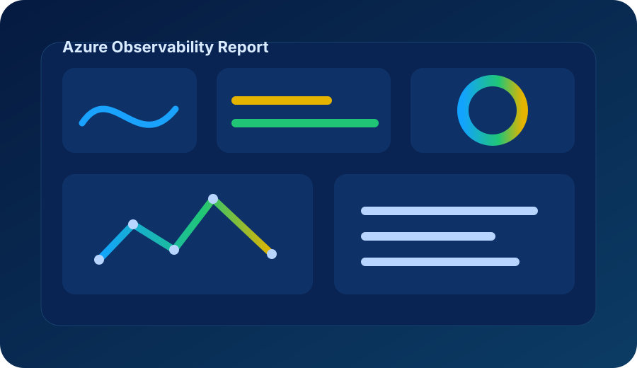

Overview
Azure Observability Report is designed to centralize technical visibility into Azure environments by collecting relevant data points and presenting them in a structured, readable format.

Goals
- Provide clear reporting for Azure monitoring and observability posture.
- Document monitored resources, diagnostic settings, log destinations and coverage gaps.
- Support repeatable analysis across subscriptions and resource groups.
- Produce outputs that can help architecture, operations and governance discussions.
Architecture
The project can evolve to support scripts, collectors, generated reports, dashboards and documentation. The website separates project overview from implementation documentation so the solution remains maintainable.
| Layer | Purpose |
|---|---|
| Collection | Retrieve Azure resource, monitoring and diagnostic configuration data. |
| Processing | Normalize findings into a consistent reporting model. |
| Presentation | Generate readable outputs for technical and management audiences. |
Documentation model
Suggested documentation hierarchy for this solution:
solutions/
└── azure-observability-report/
├── overview
├── prerequisites
├── installation
├── configuration
├── execution
├── outputs
└── troubleshootingRepository
Replace the placeholder below with the final repository URL when the Azure Observability Report repository is published.
Open TrimTechBR on GitHub